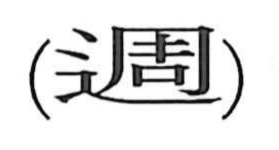

週

Kun: meguru | On: shuu
week ・ to go around ・ circuit
Explanation
週 combines 辵, movement, with 周 as its sound element. 周 pictures a rectangular shield decorated across its whole surface. The complete coverage gives a sense of all around, a full circuit, or something extending throughout.
With movement added, 週 means to go around and return in a cycle. Days that recur after a fixed interval can be grouped into such a circuit. The familiar week is a seven-day cycle, and 週 names that unit in words for weekly publications and recurring schedules. The turning back to the starting point is the shared idea.